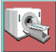

Operating Documentation
Direction 5133330-3, Rev# 14
Module Version 1.0, Version Date 5/3/07
Operating Documentation |
| ||||
| Poison Hazard! | ||||
| The phantom contains Dimethyl Silicone fluid. DO NOT INGEST. Eye contact may cause minor irritation. | ||||
| If a leak or spill occurs, wipe up or absorb in inert material and place in container for disposal. Incineration or landfill is the recommended disposal method. |
| Condition | Reference | Effectivity |
|---|---|---|
No image artifacts | - | - |
- | - |
At the operator workspace, select the scan icon 
If necessary, exit out of any previous exams by selecting [End Exam].
Click on [New Pt] and enter the following:
Id: geservice
Name: snr check
Weight (lb.): 111
Remove the head coil, if present, from the cradle.
| ||||
| Poison Hazard! | ||||
| The phantom contains Dimethyl Silicone fluid. DO NOT INGEST. Eye contact may cause minor irritation. | ||||
| If a leak or spill occurs, wipe up or absorb in inert material and place in container for disposal. Incineration or landfill is the recommended disposal method. |
Setup using SPT Loader: Position the SPT body loader and body sphere on the table and landmark per Illustration 1.
At the operator workspace, prepare the system for an SNR Check (Body, Axial).
Press MOVE TO SCAN.
Click on [Autoview], just below the Autoview image display screen; your images will be displayed automatically.
Click on [Save Series].
Click on [Auto Prescan]. After prescan, check the R1 value. R1 must equal 11 to get valid results. Record R1, R2, TG, and system frequency values in the Data Sheet at the end of this document, Body SNR Data. If R1 does not equal 11, some of the items to check are the following:
Check for proper cable length to preamp.
Ensure that slice thickness is within specification.
Download TPS again, then on the Service Desktop click on [Reset TPS]. Repeat steps Step 1 through 10.
Click on [Scan]. After scan #1 is complete, click on [Scan] again (two back-to-back scans).
After the series #1 back-to-back scans are complete, click on [New Series].
At the operator workspace, prepare the system for an SNR Check (Body, Sagittal) scan.
Click on [Save Series], then [Prepare to Scan].
[Auto Prescan]. After prescan, check the R1 value. If R1 does not equal 11, refer to step 11 for items to check. Record R1, R2, TG, and system frequency values in Data Sheet 1.
Click on [Scan]. After the first scan of series #2 is complete, click on [Scan] again (two back-to-back scans).
After the series #2 back-to-back scans are complete, click on [New Series].
At the operator workspace, prepare the system for an SNR Check (Body, Coronal) scan.
Enter the anterior offset for Scanning Range start/end location. Find the offset as follows:
Click the  (Image Browser) icon. When the browser is displayed, click [Viewer].
(Image Browser) icon. When the browser is displayed, click [Viewer].
Click [Measure], then select the rectangular cursor tool. Rotate the cursor box 90 degrees clockwise by dragging the rotation handle until the handle marker is placed on the display's right side. See Illustration 2.
Adjust the rectangular cursor size, dragging the size/shape handle, so that all four corners touch the edge of the image.
Click [Measure], then select the (report cursor) tool. Click the rectangle created in Step 19.c, then place the report cursor on top of the rotation handle of the rectangular cursor box. Read the A/P location. See Illustration 3.
Click the (scan) icon. In the SCANNING RANGE area, enter that value for the A/P Start and End values (anterior offset) of the coronal scan.
Click on [Save Series], then [Prepare to Scan].
Click on [Auto Prescan]. After prescan, check the R1 value. If R1 does not equal 11, refer to step 11 for items to check. Record R1, R2, TG, and system frequency values in Data Sheet 1.
Click on [Scan]. After the first scan of series #3 is complete, click on [Scan] again (two back-to-back scans).
For analysis, see SNR Image Analysis.